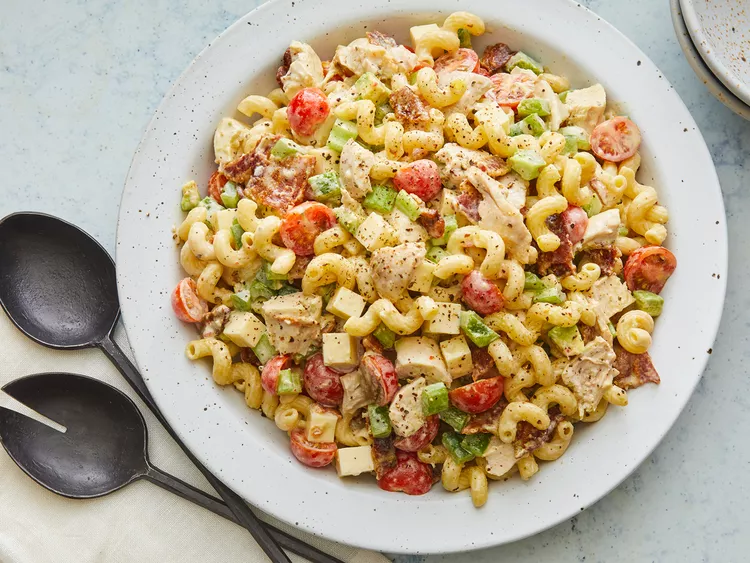

pasta

description
This delicious chicken pasta salad has all the flavors of a chicken club
sandwich!
ingredients
- 8 ounces corkscrew-shaped pasta
- ¾ cup Italian-style salad dressing
- ¼ cup mayonnaise
- 2 cups chopped, cooked rotisserie chicken
- 12 slices crispy cooked bacon, crumbled
- 8 ounces cherry tomatoes, halved
- 1 cup cubed Muenster cheese
- 1 cup chopped celery
- 1 cup chopped green bell pepper
- 1 avocado - peeled, pitted, and chopped
steps
-
Bring a large pot of lightly salted water to a boil. Cook pasta in the
boiling water, stirring occasionally, until tender yet firm to the bite,
about 10 to12 minutes. Drain and rinse under cold water.
-
Whisk Italian-style dressing and mayonnaise together in a large bowl.
Stir in pasta, chicken, bacon, tomatoes, cheese, celery, green bell
pepper, and avocado until evenly coated.
back to menu